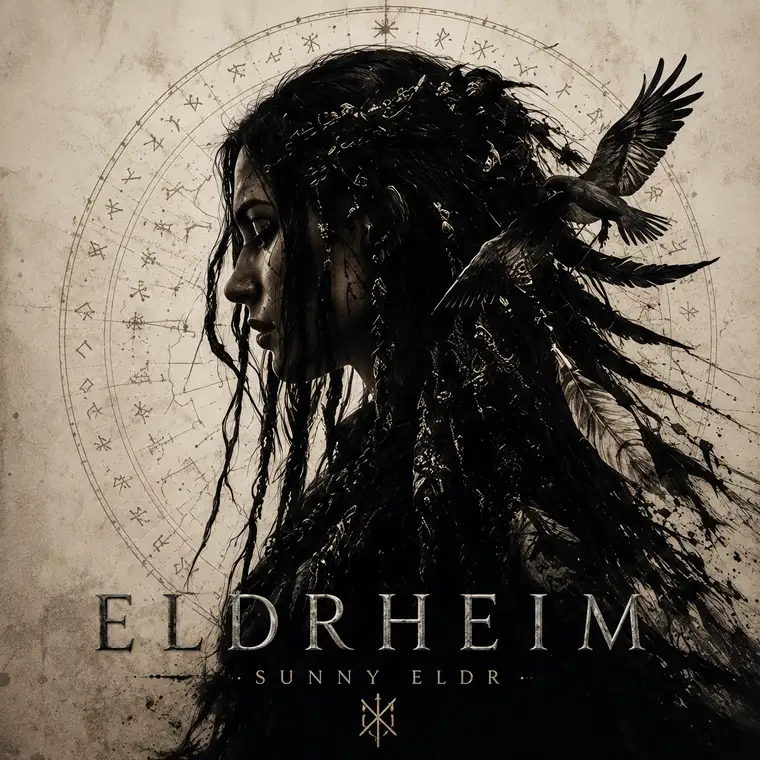

01 / THE ARTIST
Fire in the voice.
Freedom in the sound.
Sunny ELDR brings a modern edge to Nordic-inspired music. Her powerful vocal style meets driving rhythms, atmospheric melodies and stories of defiance, belonging and inner strength. It is a sound built for both an intimate moment and a full-scale performance.
Her album ELDRHEIM brings together anthems such as Blood of the North, Úlfr í nótt and Nordens Ulve. Beyond her own releases, collaborations with SUNRIVA reveal another side of Sunny’s musical world.